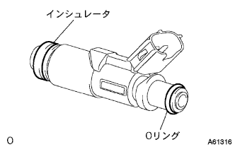
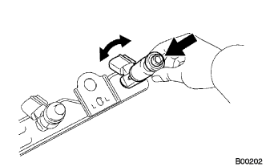
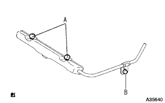
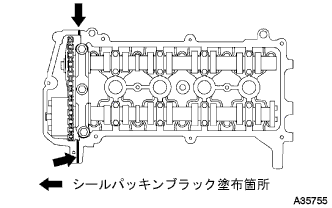
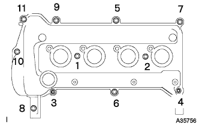
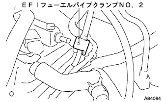
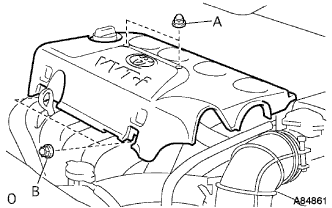

フューエル インジェクタASSY 取り付け |
| 1. フューエル インジェクタASSY取り付け |
|  |
新品のインシュレータをフユーエルインジエクタASSYに取り付ける。
新品のフユーエルインジエクタASSYのOリングにガソリンを塗布する。
|  |
フユーエルインジエクタASSYを左右に回転させながら、フユーエルデリバリパイプに取り付ける。
| 2. デリバリパイプ スペーサ NO.1取り付け |
デリバリパイプスペーサNo.1をシリンダヘツドに取り付ける。
| 3. フューエルデリバリ パイプSUB-ASSY取り付け |
|  |
ボルト３本でフユーエルインジエクタASSY付きでフユーエルデリバリパイプを取り付ける。
フユーエルインジエクタASSYのコネクタを接続する。
| 4. シリンダヘッド カバーSUB-ASSY取り付け |
|  |
図の位置にシールパッキンブラックを塗布し、シリンダヘツドカバーを取り付ける。
|  |
ボルト９本およびナット２個で、シリンダヘツドカバーを取り付ける。
図の順序で数回に分けてボルトおよびナットを締め付ける。
| 5. イグニッション コイル NO.1取り付け |
ボルトでイグニッションコイルを取り付ける。
コネクタを接続する。
| 6. フューエル チューブSUB-ASSY接続 |
フユーエルチユーブを接続する。
| 7. EFI フューエルパイプ クランプ NO.2取り付け |
|  |
EFIフユーエルパイプクランプNo.2をフユーエルチユーブに取り付ける。
| 8. ベンチレーション ホース接続 |
ベンチレーションホースをベンチレーションホースクリップで取り付ける。
| 9. ベンチレーション ホース NO.2接続 |
ベンチレーションホースNo.2をベンチレーションホースクリップNo.2で取り付ける。
| 10. シリンダヘッド カバー NO.2取り付け |
|  |
ナットA２個を締め付け後、ナットB2個でシリンダヘツドカバーNo.2を取り付ける。
| 11. 燃料漏れ点検 |